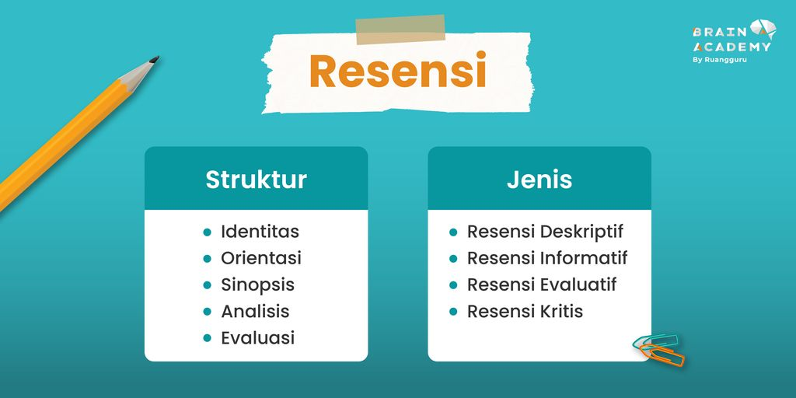
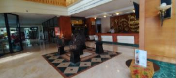

Ini adalah halaman BI
Dalam BI, kita belajar tentang hakikat teks resensi dan untuk tugas edutrip, kita diminta membuat teks resensi tentang sebuah restoran atau hotel yang kita kunjungi. Saya memilih untuk membuat teks resensi tentang Hotel Novotel di Solo. Ada banyak destinasi menarik yang dapat dikunjungi di Solo. Beberapa contohnya adalah Museum Manusia Purba Sangiran - Krikilan dan Institut Seni Indonesia dimana saya belajar gamelan. Solo cocok untuk dikunjungi pada bulan April hingga September karena saat itu masih musim kemarau. Hal yang menurutku sangat menarik adalah Mueseum De Tjolomadoe, pabrik gula dengan arsitektur Eropa dan dijadikan tempat wisata. Di Solo, saya tinggal di hotel Novotel Solo. Hotel ini diletak pada Slamet Riyadi St No.272, Timuran, Banjarsari, Surakarta City, Central Java 57141. Hotel ini lengkap dengan gym yang cukup luas dan banyak alat, spa yang menyediakan banyak pelayanan seperti pijat tradisional, pijat peremajaan, pijat aromaterapi, pilihan lengkap untuk perawatan kaki, perawatan wajah dan mandi tubuh, kolam renang terbuka yang cukup besar dengan tempat istirahat dan jemur di samping kolam. Hotel ini juga menyediakan sarapan pagi di restorannya tapi menurut saya, makanannya kurang bervariasi jika dibandingkan dengan hotel lain seperti Grand Mercure. Hotel cukup besar dengan 9 lantai dan kamar juga sangat luas. Hotel ini juga dekat dengan Solo paragon lifestyle mall dan stasiun Solo balapan. Hotel ini menyediakan banyak pilihhan untuk kamar dari kamar superior yang dapat dipilih 1 tempat tidur ganda atau 2 tempat tidur single mulai dari harga Rp 446 987 untuk 1 malam. Mereka juga ada kamar executive dengan 1 tempat tidur ganda untuk Rp 523 487 setiap malam. Kamar superior juga ada pilihan keluarga dengan 1 tempat tidur ganda dan 1 tempat tidur single untuk Rp 625 206. Mereka juga menyediakan kamar suite dengan 1 tempat tidur ganda untuk Rp 803 987 setiap malam. Hotel ini sudah cukup bagus untuk harganya dengan lobby yang sangat luas, kamar yang cukup luas dan lengkap dengan tempat tidur besar, smart TV, meja, sofa kecil dan kamar mandi yang luas. Hotel ini juga terlihat cukup bersih, saya hampir sama sekali tidak melihat kotoran di lobby, kamar, dan restoran. Staff di hotel ini juga ramah, baik, dan selalu membantu. Tempatnya juga sangat aman dan rasa makanan sarapan di restoran lumayan. Meskipun banyak kelebihan, tidak ada hotel yang sempurna. Pasti ada kekurangan dan hotel ini tidak terkecuali. Tapi hotel ini emang hampir tidak ada kekurangan sama sekali. Kekurangan yang saya temukan adalah hanya bahwa makanan di restoran kurang bervariasi jika dibandingkan dengan hotel lain seperti Grand Mercure. Secara keseluruhan, hotel ini sudah baik dalam aspek pelayanan, kebersihan, keamanan, dan rasa makanan di restoran. Hotel juga sangat bagus untuk harganya dengan fasilitas lengkap dan bagus. Saya sangat rekomendasi hotel ini jika ingin liburan di Solo. Hotel ini juga sangat cocok untuk liburan karena lokasi strategisnya dengan banyak area publik yang dapat dikunjungi sekitarnya. Jika Anda memutuskan untuk menginap di hotel ini, saya harap Anda dapat menikmati masa menginap Anda seperti saya. |
  |